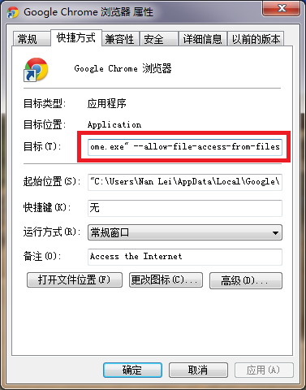

使用说明：
1.本系统不依赖任何服务器端程序，可以单机运行，但请使用IE8以上、Chrome或FireFox浏览器
2.本系统需要访问公共网络，请确保当前计算机网络畅通，否则地图不会显示
3.本系统数据由相关人员提供，没有数据时系统程序不会起作用，仅供浏览地图
4.请相关人员确保数据保密和信息安全，未经授权不得随意传播
5.本系统持续开发和完善，若有任何疑问请集中反馈至相关负责人
使用帮助：
1.使用Chrome浏览器，左侧导航不显示的解决办法，右击桌面的Chrome浏览器图标，选择属性，在目标中补充参数：--allow-file-access-from-files
参考如下图所示，--前需要保留一个空格；使用时请先打开Chrome浏览器，然后再打开index.html
